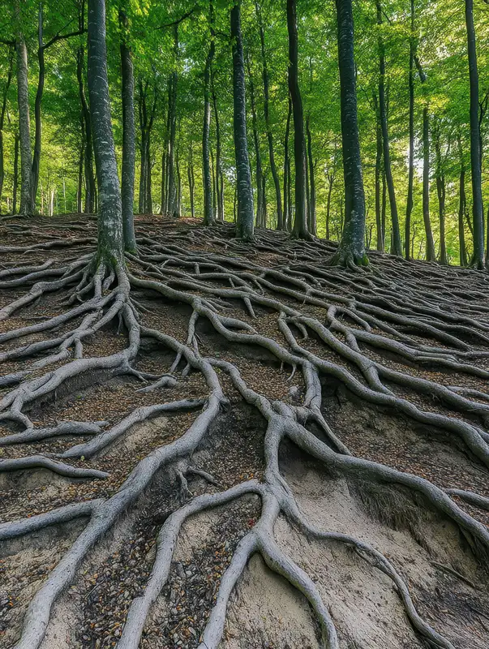
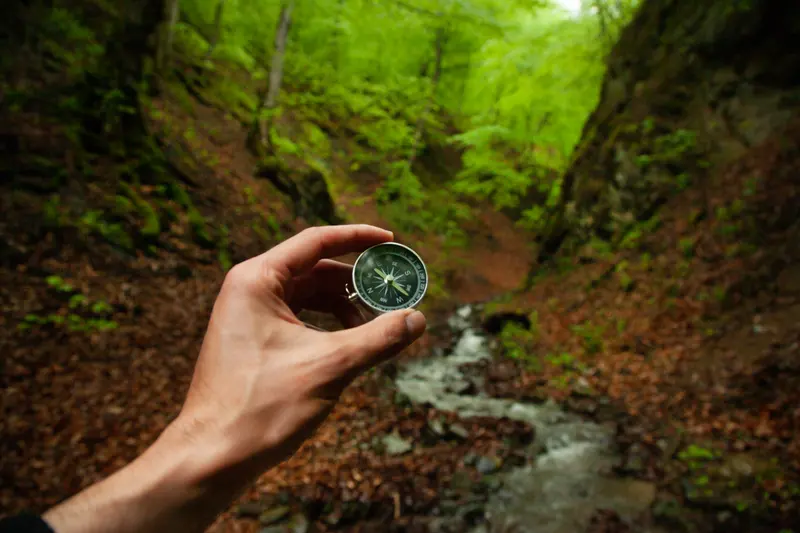
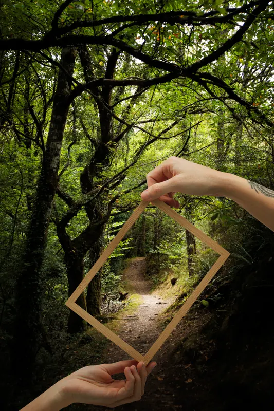

Bitki Dikim & Saksı Değişimi Atölyesi
Değişim ve liderlik yolculuğunu saksı, kök ve toprak metaforlarıyla görünür kılan uygulamalı öğrenme deneyimi.
Deneyimsel Uygulama
Atölyeyi İncele

Afloday · Eğitim Gelişim Danışmanlık
Bitkilerin, çiçeklerin başrolde; katılımcının yönetmen olduğu atölyeler tasarlıyoruz.
Kurumsal hizmetlerGelişim atölyeleri · Hobi atölyeleri · Danışmanlık
Hobi atölyeleriÇiçek · Bitki · Çocuk (+3 ve +5 yaş)
BiçimYüz yüze ya da tüm Türkiye geneli online


Eğitim metodolojimiz
Tüm eğitim tasarımımız, bir bitkinin hayatta kalma ve serpilme sürecinden ilham alan 3 aşamalı bir paterne dayanır — bu, sadece doğanın değil, bağlılığı yüksek, proaktif ve verimli çalışanların da temel başarı formülüdür.

01 KÖK SALMAKGerçek büyüme yukarı değil, aşağı doğru başlar. “Ben” egosunun sınırlarından çıkıp “Biz” bilincine uyanmaktır — bireyin, ait olduğu kurum kültürünü ve değerlerini gerçekten sahiplenmesidir.

02 SORUMLULUK ALMAKEkosistemin bir parçası olmak, rüzgârda savrulmak değildir. Bir nehrin denize ulaşma kararlılığıyla kendi yatağını bulması gibi; proaktif davranarak kendi potansiyeli ve etki alanı içinde inisiyatif kullanmaktır.
Orman, ağaçların toplamından fazlasıdır — köklerin altında birbirini besleyen devasa bir zekadır. Kendini geliştirirken ekosistemi de besleyerek yukarı taşımaktır; en güçlü olan değil, en iyi bağ kuran hayatta kalır.
Eğitim & Gelişim
Değişim ve liderlik yolculuğunu saksı, kök ve toprak metaforlarıyla görünür kılan uygulamalı öğrenme deneyimi.

Kurutulmuş bitkilerle ilham veren bir mesaj tasarlarken esneklik, farklı bakış açıları ve birlikte üretmeyi keşfetme deneyimi.
Afloday
Birlikte yeşerdiğimiz, doğanın iyileştirici gücünü ve atölye deneyimlerimizi paylaştığımız kurumsal iş ortaklarımız.